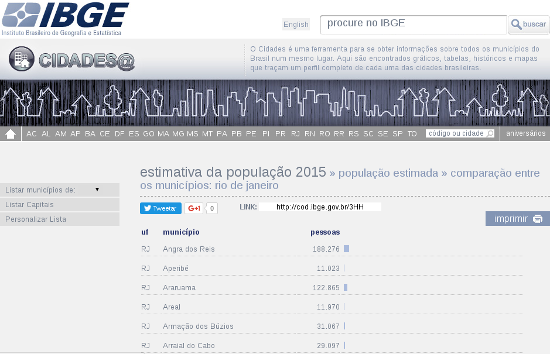

Introdução aos Dados Abertos
Turicas aka Álvaro Justen
Encontro de Dados Abertos de Joinville
26 de agosto de 2017 - Joinville/SC
Turicas, prazer! =)
Sigam-me os bons:
{twitter,
github,
youtube,
slideshare,
instagram}
/turicas
turicas@pythonic.cafe
Blog: turicas.info
+55 41 999 311 221
(Signal, Telegram, WhatsApp)
bit.ly/jlle-dados-abertos

escoladedados.org

generonumero.media

impacto.jor.br


pythonic.cafe
youtube.com/c/PythonicCafe
simplefractal.com

(Picture by Max
Pixel, CC-0)
“ Dados abertos são dados que podem ser livremente usados, reutilizados e redistribuídos por qualquer pessoa - sujeitos, no máximo, à exigência de atribuição da fonte e compartilhamento pelas mesmas regras. ”-- OpenData Handbook (definição de Open Definition)
“ Quanto menos acessível está um dado, mais fechado ele está. ”

Investigar as questões de gênero no Brasil e América Latina, com dados abertos e técnicas de jornalismo de dados.


youtu.be/7yQ8U2tFFq4
Problemas

“ O nível de acessibilidade de um dado é um filtro sobre quem conseguirá utilizá-lo. ”

Dados Presos

Análise?


Programming Language?

Fonte: github.com/stereobooster/programming-languages-genealogical-tree
Python

rows
Facilita conversão, limpeza e análise
pip install rows # Python Package Index
apt-get install rows # Debian
dnf install rows # Fedora
github.com/turicas/rows

csv com Python + rows
import rows
table1 = rows.import_from_csv('data/brazilian-cities.csv')
for row in table1:
print(row)
Row(state='PR',
city='Curitiba',
inhabitants=1751907,
area=435.04)
# namedtuple #FTW \o/
xls com Python + rows
import rows
table2 = rows.import_from_xls('data/brazilian-cities.xls')
for row in table2:
print(row)
html com Python + rows
import rows
table3 = rows.import_from_html('data/brazilian-cities.html')
for row in table3:
print(row)
pythonsul.org
08 a 10 de setembro de 2017
Caxias do Sul/RS

pythonbrasil.org.br
06 a 11 de outubro de 2017
Belo Horizonte/MG 

coda.escoladedados.org
25 e 26 de novembro de 2017
São Paulo/SP